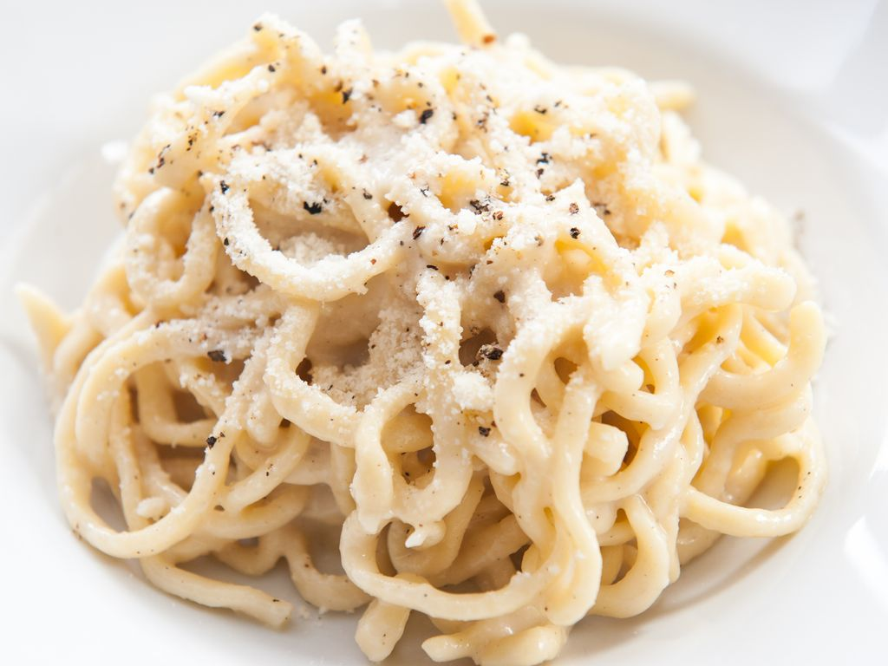

Cacio and pepe pasta

Description
Une spécialité romaine crêmeuse qui ne manque pas de piquante
Ingredients
- 500g de spaghetti ou rigatoni
- 100 g de pecorino romano
- huile d'olive
- poivre du moulin
Steps
- Râper le pecorino au dernier moment.
- Le mettre dans un saladier.
- Ajouter du poivre noir moulu (à volonté), et 2 à 3 cuillères à soupe d'huile d'olive.
- Faire cuire les pâtes « al dente » dans un grand volume d'eau bouillante salée.
- Egoutter les pâtes.
- Les verser aussitôt dans le saladier contenant le fromage, le poivre et l'huile. Bien remuer.
- Déguster.